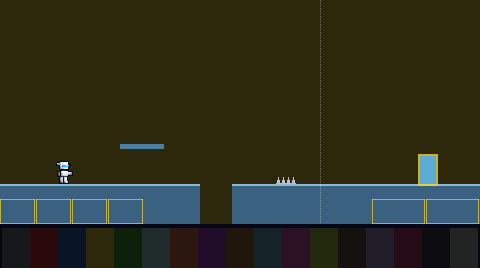
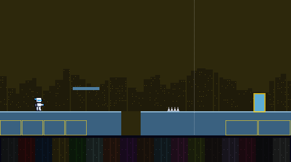
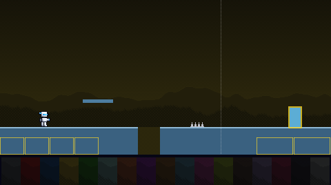
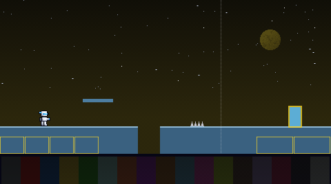

The far picture behind an area. Today it is one flat colour: the coming boss's primary, heavily darkened, so you can tell who is next. Every variant keeps that colour and is never brighter than today near the ground, so the ground and pit edges stand out at least as well as they do now. Shown on the way to the Electric boss.
One flat colour.

Distant towers with a few lit windows, darker than the sky. One layer, drawn once.

The sky darkens toward the top, row by row, the way SNES backdrops did, over two ridges of hills with a lit crest.

A night sky: stars above the haze, and a moon in the boss's own colour, high and out of the way.

To pick: comment on this board, tag Claude, and give a number, or say "keep today".